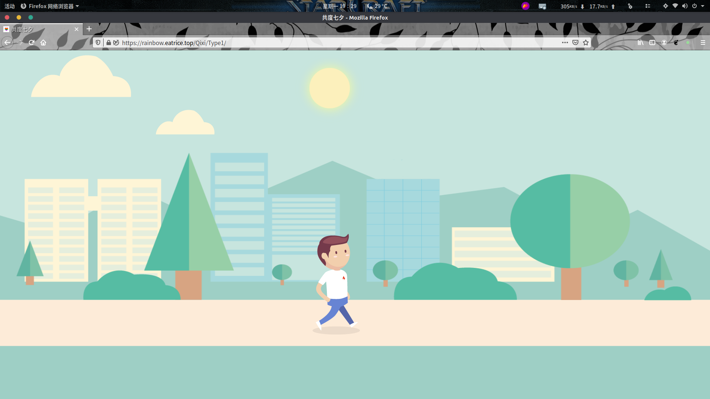

rainbow-七夕专题
本文最后更新于：10 个月前
类型列表（直接点击对应标题可预览）
部分网页来自github.com
Type1:欢度七夕动画，https://rainbow.eatrice.top/Qixi/Type1/;
说明：该动画固定了时间序列和切换时序，全动画由各种图片运动而成，无文字。未有自定义链接。
Type2:很长的一段文字和日期，https://rainbow.eatrice.top/Qixi/Type2/;
说明：该页面有以下几处可自定义处：
- 左上角信件的收件人：预览对应值为
My Love，对应链接生成器属性为：MyLove - 右下角的落款：预览对应为
EatRice.Me，对应链接生成器属性为：MyName - 右侧的时间记录，该时间记录表示为你与所表白的对象第一次在一起的时刻至今的时间，因此可以修改认识的初始时间，程序会自动计算至今为止的时间：对应预览为右侧不断刷新的时间。根据提示在下方输入对应的时间即可。
Type3:火树银花，https://rainbow.eatrice.top/Qixi/Type3/;
说明：该页面有以下几处可自定义处：
- 左上角信件的收件人：预览对应值为
My Love，对应链接生成器属性为：MyLove - 右下角的落款：预览对应为
EatRice.Me，对应链接生成器属性为：MyName - 右侧的时间记录，该时间记录表示为你与所表白的对象第一次在一起的时刻至今的时间，因此可以修改认识的初始时间，程序会自动计算至今为止的时间：对应预览为右侧不断刷新的时间。根据提示在下方输入对应的时间即可。
- Type3 当前支持自定义表白内容，在下方的文本输入框输入相关内容即可，不支持特殊符号‘和#。
Type4:图片加文字，https://rainbow.eatrice.top/Qixi/Type4/;
说明：该页面有以下几处可自定义处：
- 首页中央的对方名字：
My Love，对应链接生成器属性为：MyLove - 首页中央的本人名字：
EatRice.Me，对应链接生成器属性为：MyName - 最后一页的时间记录，该时间记录表示为你与所表白的对象第一次在一起的时刻至今的时间，因此可以修改认识的初始时间，程序会自动计算至今为止的时间：对应预览为右侧不断刷新的时间。根据提示在下方输入对应的时间即可。
- Type4 当前支持自定义每页的一句话句子，可根据以下提示进行填写，不填写则为预览句子。
类型图片预览
- Type1：
 - Type2：
- Type3：
- Type4：
源地址
源地址在rainbow七夕专题: https://rainbow.eatrice.top/Qixi/
本博客所有文章除特别声明外，均采用 CC BY-SA 4.0 协议 ，转载请注明出处！